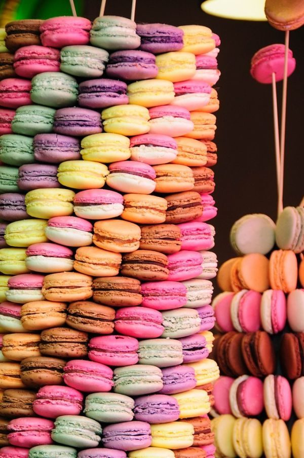
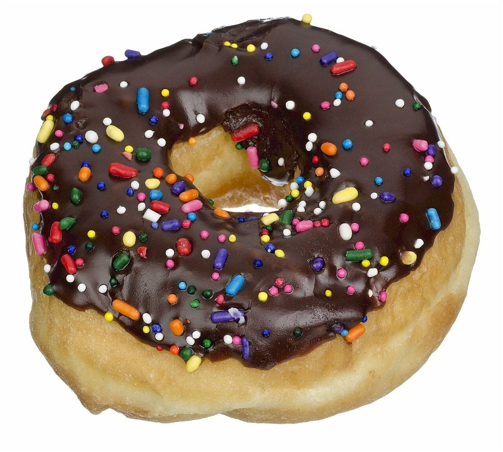

カフェ / 奈良県五條市
Hani cafe
奈良県五條市西吉野町にあるカフェ「Hani cafe」のご案内ページです。営業時間やメニューなど、詳しいことは準備中。まずはInstagramをのぞいてみてください。

制作側の連想
「Hani」の響きから、はにかみを。
店名の由来は分かりません。制作側は「Hani」という響きから、はにかむ(照れてほんのり頬が赤らむ)様子を連想し、このページを「赤みの五段階」で組みました。お店の理念・由来とは無関係の、制作側の連想です。
赤みの五段階
うすづきから、こっくりまで。
写真は色の濃さのイメージで選んだ、国外・撮影地不明のフリー素材です。お店の商品ではありません。
- 1うすづき

アーモンドをのせたペストリー(イメージ) ほとんど白に近い、ごくうすい色。
- 2ほんのり

ピンク色の布のしわ(イメージ) 布のしわにあらわれる、やさしい桃色。
- 3ぽっ

積み重なったマカロン(イメージ) 色が重なって、にぎやかに赤みが増す。
- 4じんわり

並んだクロワッサン(イメージ) 黄金色から、少しずつ深まっていく色。
- 5こっくり

チョコレート糖衣のドーナツ(イメージ) いちばん濃い、チョコレート色。
ご案内
お店のこと(確認できたものだけ)
| 所在地 | 〒637-0103 奈良県五條市西吉野町向加名生63 |
|---|---|
| 電話 | 070-1731-8282 |
| 営業時間 | 準備中 |
| 定休日 | 準備中 |
| ご予約 | 準備中 |
| 駐車場 | 準備中 |
| SNS | Instagram @hanicafe_ |